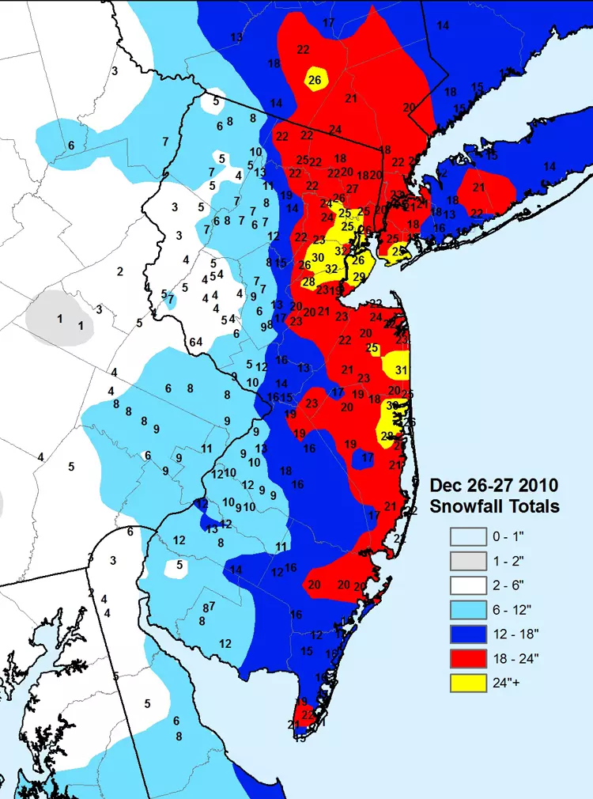
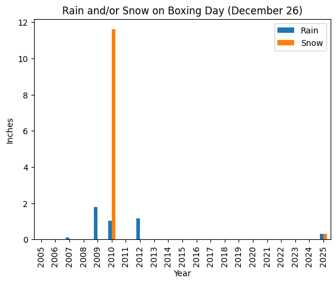

import pandas as pd
import numpy as np
import matplotlib.pyplot as pltWhite Christmas Predictions and Philadelphia Weather
- How often has snow occurred versus not occurred on Christmas Day from 2005 to 2025?
- What is the probability of a White Christmas (snowfall on December 25), based on historical weather data (2005-2025)?
STEPS 1. Filter rows by day column to only show December 25th 2. Filter the rows to find the years that had snow 3. Calculate the difference between days that had no snow versus the days that had snow to find how often snowfall occured 4. Calculate the probability of snowfall occuring on December 25th
Setup
Load the dataset
weather_df = pd.read_csv('data/philadelphia_weather_2005_to_2025.csv')
weather_df = weather_df.assign(date=pd.to_datetime(weather_df['date']))Inspect the data
- We have looked at these data in a couple of previous notebooks
- Remind yourself of the columns
- Here the data goes from 2005 to 2025
weather_df.columnsIndex(['day', 'year', 'high', 'low', 'rain', 'snow', 'date', 'day_num',
'month_num', 'dow', 'dow_name', 'month'],
dtype='str')weather_df.head()| day | year | high | low | rain | snow | date | day_num | month_num | dow | dow_name | month | |
|---|---|---|---|---|---|---|---|---|---|---|---|---|
| 0 | January 1 | 2005 | 64 | 39 | 0.00 | 0.0 | 2005-01-01 | 1 | 1 | 5 | Saturday | January |
| 1 | January 2 | 2005 | 47 | 33 | 0.01 | 0.0 | 2005-01-02 | 2 | 1 | 6 | Sunday | January |
| 2 | January 3 | 2005 | 57 | 40 | 0.06 | 0.0 | 2005-01-03 | 3 | 1 | 0 | Monday | January |
| 3 | January 4 | 2005 | 55 | 44 | 0.00 | 0.0 | 2005-01-04 | 4 | 1 | 1 | Tuesday | January |
| 4 | January 5 | 2005 | 47 | 36 | 0.62 | 0.0 | 2005-01-05 | 5 | 1 | 2 | Wednesday | January |
weather_df['year'].value_counts()year
2008 366
2020 366
2024 366
2016 366
2012 366
2009 365
2007 365
2006 365
2005 365
2013 365
2014 365
2011 365
2010 365
2017 365
2015 365
2019 365
2018 365
2021 365
2022 365
2023 365
2025 365
Name: count, dtype: int64xmas_filter = weather_df['day'] == 'December 25'
weather_df[xmas_filter]| day | year | high | low | rain | snow | date | day_num | month_num | dow | dow_name | month | |
|---|---|---|---|---|---|---|---|---|---|---|---|---|
| 358 | December 25 | 2005 | 55 | 27 | 0.40 | 0.0 | 2005-12-25 | 25 | 12 | 6 | Sunday | December |
| 723 | December 25 | 2006 | 49 | 33 | 0.69 | 0.0 | 2006-12-25 | 25 | 12 | 0 | Monday | December |
| 1088 | December 25 | 2007 | 47 | 34 | 0.00 | 0.0 | 2007-12-25 | 25 | 12 | 1 | Tuesday | December |
| 1454 | December 25 | 2008 | 60 | 30 | 0.04 | 0.0 | 2008-12-25 | 25 | 12 | 3 | Thursday | December |
| 1819 | December 25 | 2009 | 41 | 28 | 0.26 | 0.0 | 2009-12-25 | 25 | 12 | 4 | Friday | December |
| 2184 | December 25 | 2010 | 33 | 26 | 0.00 | 0.0 | 2010-12-25 | 25 | 12 | 5 | Saturday | December |
| 2549 | December 25 | 2011 | 48 | 29 | 0.00 | 0.0 | 2011-12-25 | 25 | 12 | 6 | Sunday | December |
| 2915 | December 25 | 2012 | 42 | 35 | 0.00 | 0.0 | 2012-12-25 | 25 | 12 | 1 | Tuesday | December |
| 3280 | December 25 | 2013 | 32 | 21 | 0.00 | 0.0 | 2013-12-25 | 25 | 12 | 2 | Wednesday | December |
| 3645 | December 25 | 2014 | 65 | 39 | 0.03 | 0.0 | 2014-12-25 | 25 | 12 | 3 | Thursday | December |
| 4010 | December 25 | 2015 | 68 | 58 | 0.32 | 0.0 | 2015-12-25 | 25 | 12 | 4 | Friday | December |
| 4376 | December 25 | 2016 | 50 | 32 | 0.00 | 0.0 | 2016-12-25 | 25 | 12 | 6 | Sunday | December |
| 4741 | December 25 | 2017 | 40 | 29 | 0.02 | 0.0 | 2017-12-25 | 25 | 12 | 0 | Monday | December |
| 5106 | December 25 | 2018 | 42 | 30 | 0.00 | 0.0 | 2018-12-25 | 25 | 12 | 1 | Tuesday | December |
| 5471 | December 25 | 2019 | 47 | 27 | 0.00 | 0.0 | 2019-12-25 | 25 | 12 | 2 | Wednesday | December |
| 5837 | December 25 | 2020 | 65 | 26 | 0.44 | 0.0 | 2020-12-25 | 25 | 12 | 4 | Friday | December |
| 6202 | December 25 | 2021 | 59 | 41 | 0.65 | 0.0 | 2021-12-25 | 25 | 12 | 5 | Saturday | December |
| 6567 | December 25 | 2022 | 29 | 18 | 0.00 | 0.0 | 2022-12-25 | 25 | 12 | 6 | Sunday | December |
| 6932 | December 25 | 2023 | 53 | 39 | 0.00 | 0.0 | 2023-12-25 | 25 | 12 | 0 | Monday | December |
| 7298 | December 25 | 2024 | 40 | 31 | 0.00 | 0.0 | 2024-12-25 | 25 | 12 | 2 | Wednesday | December |
| 7663 | December 25 | 2025 | 53 | 32 | 0.00 | 0.0 | 2025-12-25 | 25 | 12 | 3 | Thursday | December |
snow_on_xmas = weather_df[xmas_filter]['snow']>0
snow_on_xmas358 False
723 False
1088 False
1454 False
1819 False
2184 False
2549 False
2915 False
3280 False
3645 False
4010 False
4376 False
4741 False
5106 False
5471 False
5837 False
6202 False
6567 False
6932 False
7298 False
7663 False
Name: snow, dtype: boolOH NO!
Unfortunately, we can see from the data that shockingly there was no snowfall on any Christmas Day from 2005 to 2025. So instead of looking at snowfall on Christmas we can pivot and look at Boxing Day (December 26)!
But to answer the orignal questions – 1. Snow has occured 0 times out of 20 on every December 25th from 2005 to 2025. 2. There is a 0% chance of snowfall on December 25th according to the historical data from 2005 to 2025
Snow on Boxing Day Predictions and Philadelphia Weather
The new questions we can asnwer are:
- How many times did snowfall occur from 2005 to 2025 on Boxing Day (December 26)?
- What was the probability of snow fall accoeding to the historical data on Boxing Day from 2005 to 2025?
Bonus!What was the probability of percipitation (rain and/or snow) on Boxing Day from 2005 to 2025?
STEPS
- Filter rows by
daycolumn to only show December 26th - Filter the rows to find the years that had
snowand count how many show data - Calculate the probability of snowfall and/or rain fall occuring on December 26th
boxing_day_filter = weather_df['day'] == 'December 26'
boxing_day = weather_df[boxing_day_filter]
boxing_day| day | year | high | low | rain | snow | date | day_num | month_num | dow | dow_name | month | |
|---|---|---|---|---|---|---|---|---|---|---|---|---|
| 359 | December 26 | 2005 | 47 | 41 | 0.02 | 0.0 | 2005-12-26 | 26 | 12 | 0 | Monday | December |
| 724 | December 26 | 2006 | 53 | 44 | 0.02 | 0.0 | 2006-12-26 | 26 | 12 | 1 | Tuesday | December |
| 1089 | December 26 | 2007 | 38 | 30 | 0.11 | 0.0 | 2007-12-26 | 26 | 12 | 2 | Wednesday | December |
| 1455 | December 26 | 2008 | 44 | 29 | 0.00 | 0.0 | 2008-12-26 | 26 | 12 | 4 | Friday | December |
| 1820 | December 26 | 2009 | 56 | 40 | 1.80 | 0.0 | 2009-12-26 | 26 | 12 | 5 | Saturday | December |
| 2185 | December 26 | 2010 | 31 | 22 | 1.05 | 11.6 | 2010-12-26 | 26 | 12 | 6 | Sunday | December |
| 2550 | December 26 | 2011 | 49 | 33 | 0.00 | 0.0 | 2011-12-26 | 26 | 12 | 0 | Monday | December |
| 2916 | December 26 | 2012 | 45 | 32 | 1.18 | 0.0 | 2012-12-26 | 26 | 12 | 2 | Wednesday | December |
| 3281 | December 26 | 2013 | 42 | 24 | 0.00 | 0.0 | 2013-12-26 | 26 | 12 | 3 | Thursday | December |
| 3646 | December 26 | 2014 | 50 | 34 | 0.00 | 0.0 | 2014-12-26 | 26 | 12 | 4 | Friday | December |
| 4011 | December 26 | 2015 | 63 | 50 | 0.00 | 0.0 | 2015-12-26 | 26 | 12 | 5 | Saturday | December |
| 4377 | December 26 | 2016 | 50 | 32 | 0.00 | 0.0 | 2016-12-26 | 26 | 12 | 0 | Monday | December |
| 4742 | December 26 | 2017 | 33 | 26 | 0.00 | 0.0 | 2017-12-26 | 26 | 12 | 1 | Tuesday | December |
| 5107 | December 26 | 2018 | 45 | 29 | 0.00 | 0.0 | 2018-12-26 | 26 | 12 | 2 | Wednesday | December |
| 5472 | December 26 | 2019 | 50 | 27 | 0.00 | 0.0 | 2019-12-26 | 26 | 12 | 3 | Thursday | December |
| 5838 | December 26 | 2020 | 32 | 24 | 0.00 | 0.0 | 2020-12-26 | 26 | 12 | 5 | Saturday | December |
| 6203 | December 26 | 2021 | 57 | 40 | 0.00 | 0.0 | 2021-12-26 | 26 | 12 | 6 | Sunday | December |
| 6568 | December 26 | 2022 | 30 | 17 | 0.00 | 0.0 | 2022-12-26 | 26 | 12 | 0 | Monday | December |
| 6933 | December 26 | 2023 | 50 | 44 | 0.00 | 0.0 | 2023-12-26 | 26 | 12 | 1 | Tuesday | December |
| 7299 | December 26 | 2024 | 41 | 26 | 0.00 | 0.0 | 2024-12-26 | 26 | 12 | 3 | Thursday | December |
| 7664 | December 26 | 2025 | 33 | 27 | 0.32 | 0.3 | 2025-12-26 | 26 | 12 | 4 | Friday | December |
boxing_day_snow = boxing_day.query('snow > 0')
boxing_day_snow| day | year | high | low | rain | snow | date | day_num | month_num | dow | dow_name | month | |
|---|---|---|---|---|---|---|---|---|---|---|---|---|
| 2185 | December 26 | 2010 | 31 | 22 | 1.05 | 11.6 | 2010-12-26 | 26 | 12 | 6 | Sunday | December |
| 7664 | December 26 | 2025 | 33 | 27 | 0.32 | 0.3 | 2025-12-26 | 26 | 12 | 4 | Friday | December |
We have our first answer! - From the data we can see that from the years of 2005 to 2025 it snowed twice. Once in 2010 and once in 2025.
Fun Fact!
Upon further research there was a great Boxing Day Blizzard that overtook the Northeast in 2010!

- This picture is from Rutgers University Climate Lab
total_boxing_day_years = boxing_day.shape[0]
total_boxing_day_years21prob_of_snow = boxing_day_snow.shape[0]/total_boxing_day_years
prob_of_snow*1009.523809523809524We now have our second answer! - The probability of seeing snow on boxing day was 9.52%
boxing_day_rain = boxing_day.query('rain > 0')
boxing_day_rain| day | year | high | low | rain | snow | date | day_num | month_num | dow | dow_name | month | |
|---|---|---|---|---|---|---|---|---|---|---|---|---|
| 359 | December 26 | 2005 | 47 | 41 | 0.02 | 0.0 | 2005-12-26 | 26 | 12 | 0 | Monday | December |
| 724 | December 26 | 2006 | 53 | 44 | 0.02 | 0.0 | 2006-12-26 | 26 | 12 | 1 | Tuesday | December |
| 1089 | December 26 | 2007 | 38 | 30 | 0.11 | 0.0 | 2007-12-26 | 26 | 12 | 2 | Wednesday | December |
| 1820 | December 26 | 2009 | 56 | 40 | 1.80 | 0.0 | 2009-12-26 | 26 | 12 | 5 | Saturday | December |
| 2185 | December 26 | 2010 | 31 | 22 | 1.05 | 11.6 | 2010-12-26 | 26 | 12 | 6 | Sunday | December |
| 2916 | December 26 | 2012 | 45 | 32 | 1.18 | 0.0 | 2012-12-26 | 26 | 12 | 2 | Wednesday | December |
| 7664 | December 26 | 2025 | 33 | 27 | 0.32 | 0.3 | 2025-12-26 | 26 | 12 | 4 | Friday | December |
percipitation = boxing_day_snow.shape[0] | boxing_day_rain.shape[0]
percipitation7prob_of_percipitation = percipitation/total_boxing_day_years
prob_of_percipitation*10033.33333333333333Finally for the last part of our analysis we know that… - The probability of seeing percipitation on boxing day from 2005 to 2025 was 33.3%
Now let’s visualize it!
boxing_day.groupby("year")[["rain", "snow"]].sum().plot(kind="bar")
plt.xlabel("Year")
plt.ylabel("Inches")
plt.title("Rain and/or Snow on Boxing Day (December 26)")
plt.legend(["Rain", "Snow"])
plt.show()